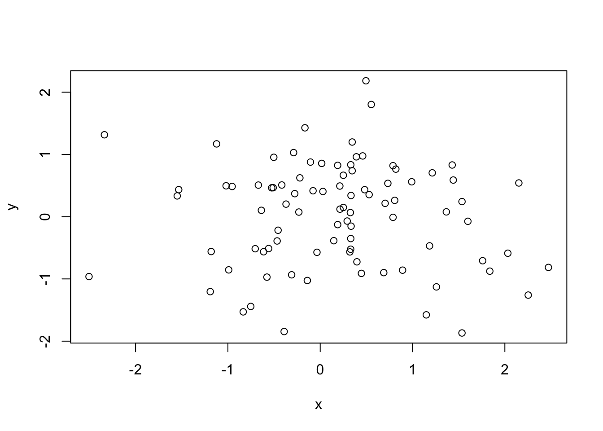
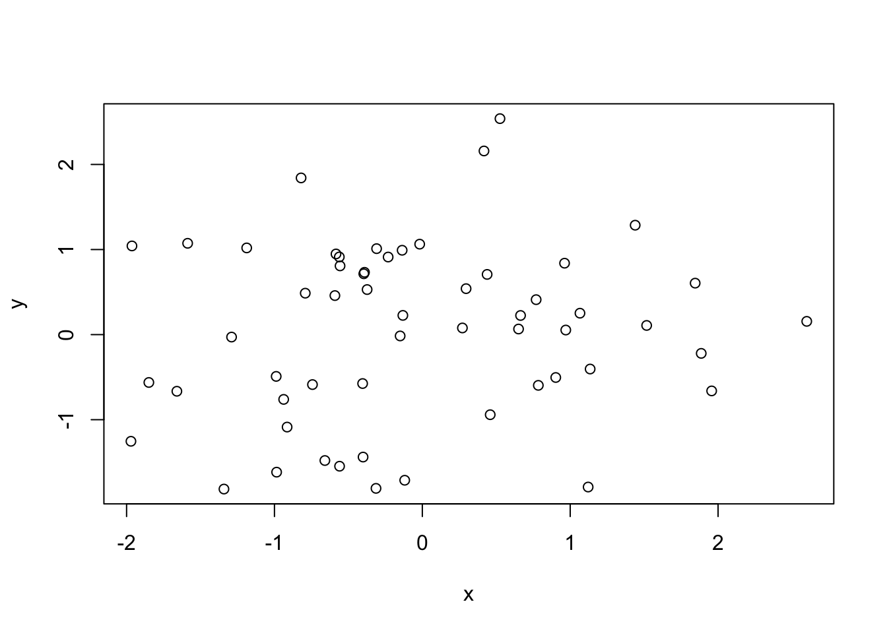
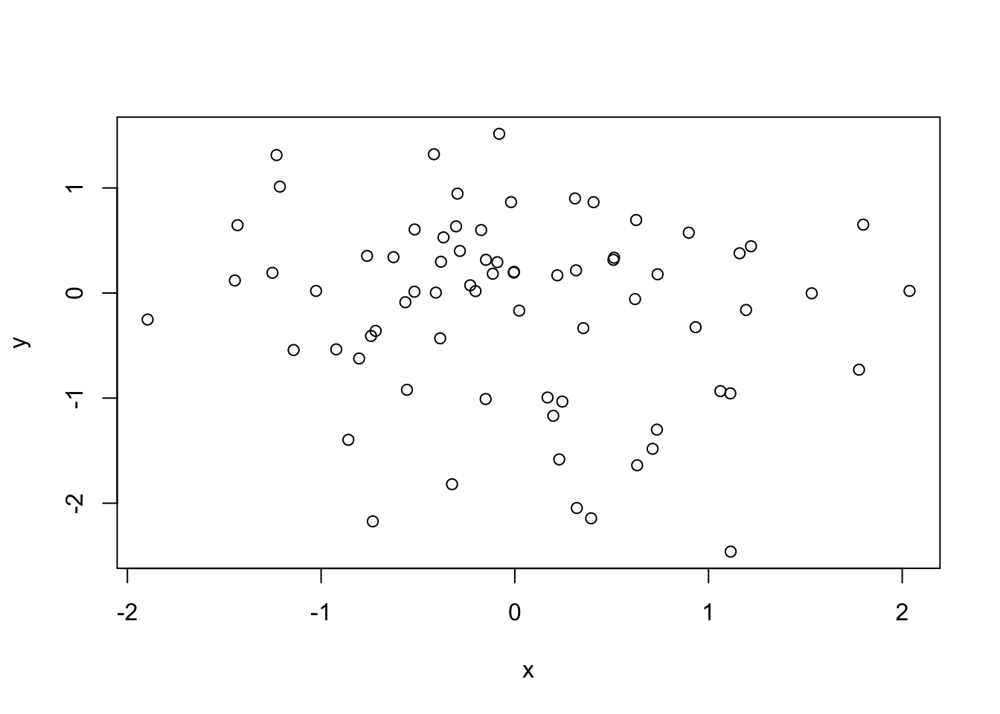
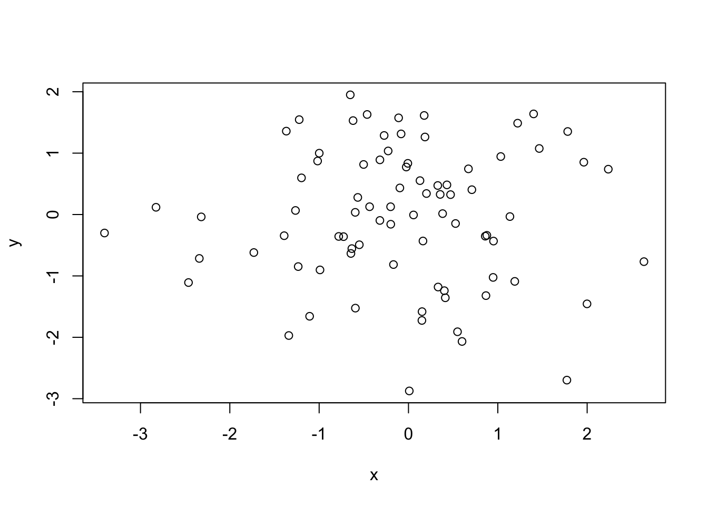
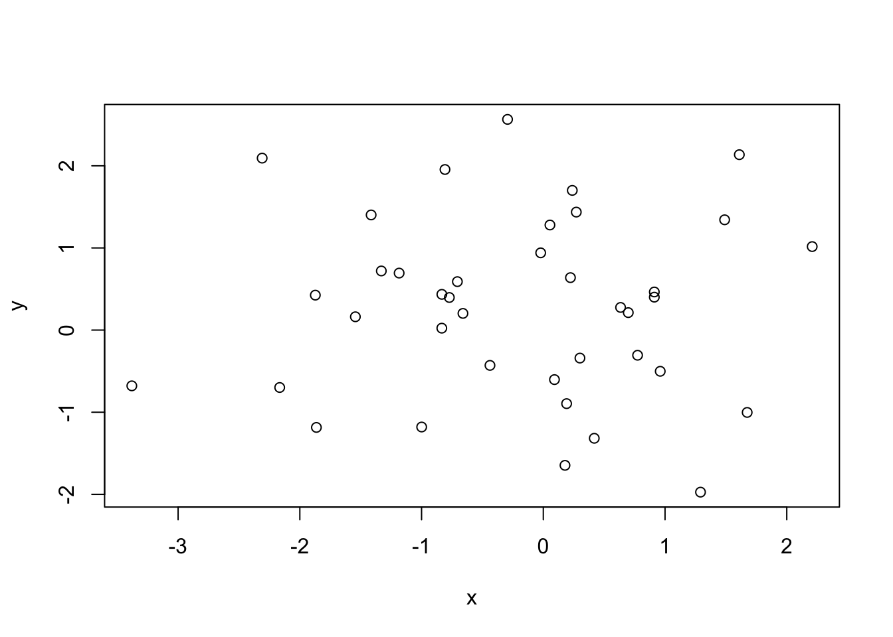

Dynamic contents in R Markdown with knit_child()
Generate random dataset
all_data <- purrr::map(1:5, ~ random_data(round(runif(1, 10, 100))))render_child <- function(data, i) {
res = knitr::knit_child(
text = xfun::read_utf8("_template.Rmd"),
envir = rlang::env(data = data, i = i),
quiet = TRUE
)
cat(res, sep = '\n')
cat("\n")
}Here is a list of reports
Dataset 1
Dataset 1 has 88 rows.
Summary
x y
Min. :-2.504 Min. :-1.8688
1st Qu.:-0.459 1st Qu.:-0.5675
Median : 0.251 Median : 0.1751
Mean : 0.191 Mean : 0.0314
3rd Qu.: 0.747 3rd Qu.: 0.5679
Max. : 2.472 Max. : 2.1839 Plot

Dataset 2
Dataset 2 has 56 rows.
Summary
x y
Min. :-1.9705 Min. :-1.8152
1st Qu.:-0.7551 1st Qu.:-0.6127
Median :-0.2702 Median : 0.1318
Mean :-0.0578 Mean : 0.0399
3rd Qu.: 0.6906 3rd Qu.: 0.8157
Max. : 2.5997 Max. : 2.5386 Plot

Dataset 3
Dataset 3 has 72 rows.
Summary
x y
Min. :-1.8957 Min. :-2.4611
1st Qu.:-0.5278 1st Qu.:-0.6496
Median :-0.0854 Median : 0.0202
Mean : 0.0105 Mean :-0.1573
3rd Qu.: 0.5394 3rd Qu.: 0.3839
Max. : 2.0377 Max. : 1.5152 Plot

Dataset 4
Dataset 4 has 81 rows.
Summary
x y
Min. :-3.403 Min. :-2.8735
1st Qu.:-0.644 1st Qu.:-0.7674
Median :-0.025 Median : 0.0148
Mean :-0.078 Mean :-0.0334
3rd Qu.: 0.549 3rd Qu.: 0.8338
Max. : 2.636 Max. : 1.9498 Plot

Dataset 5
Dataset 5 has 39 rows.
Summary
x y
Min. :-3.380 Min. :-1.973
1st Qu.:-0.917 1st Qu.:-0.552
Median : 0.054 Median : 0.397
Mean :-0.213 Mean : 0.276
3rd Qu.: 0.666 3rd Qu.: 0.979
Max. : 2.209 Max. : 2.565 Plot
